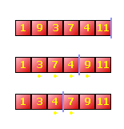

| << Sortowanie naturalne Strona g³ówna Spis Najkrótsza droga >> |
Jeœli chodzi o sortowanie tablic, istnieje metoda trochê szybsza, ni¿ przez zamianê parami. Zowie siê ona (doœæ zabawnie) metod¹ b¹belkow¹. Na fizyce p³ynów znam siê mniej wiêcej tak samo, jak na fizyce w ogóle (czyli wcale), jednak podobno z b¹belkami jest tak, ¿e du¿e b¹ble id¹c do góry wypieraj¹ ma³e b¹belki, zaœ z kolei du¿e b¹ble napotykaj¹c na swej drodze jeszcze wiêksze b¹bliska, zatrzymuj¹ siê. St¹d nazwa metody, która opiera siê w³aœnie na tym, ¿e dokonujemy przemieszczenia danej liczby w tablicy, dopóki nie dojdziemy do jeszcze wiêkszej liczby.
W praktyce algorytm b¹belkowy wygl¹da bardzo podobnie do algorytmu porz¹dkowania naturalnego. Tym razem jednak nie liczymy zamienianych par, lecz zapamiêtujemy numer ostatnio zamienianej pary, a po ka¿dym przejœciu przez tablicê dodatkowo zapamiêtujemy ten numer w zmiennej, któr¹ tutaj nazwiemy kres. Wyznacza ona granicê, do której przegl¹damy pary. Granica ta w miarê postêpu sortowania bêdzie siê zmniejsza³a, a¿ dojdzie do samego pocz¹tku tablicy. W ten sposób nie musimy za ka¿dym razem przegl¹daæ ca³ej tablicy, lecz jedynie do miejsca które oznaczyliœmy ostatnio zmienn¹ kres. Tutaj w³aœnie kryje siê przewaga "b¹belków" nad standardowym sortowaniem.
Rzuæ okiem na rysunek. Mamy tu tak¹ sam¹ tablicê 6 liczb, jak w przyk³adzie do sortowania naturalnego. Pierwszy przebieg pêtli for równie¿ daje takie same rezultaty, ale tym razem zamiast liczyæ zamiany, zapamiêtujemy w zmiennej ost numer ostatniej zamienianej pary. W pierwszym przebiegu zamieniamy miejscami nastêpuj¹ce pary: 9 i 3, 9 i 7, 7 i 4 (czyli para 2-ga, 3-cia i 4-ta). Przy ka¿dej takiej zamianie do ost wpisujemy numer pary, a wiêc przy wyjœciu z pêtli for ost wynosi 4 (czwart¹ parê zamienialiœmy jako ostatni¹). Zapamiêtujemy ost jako nowy kres przegl¹dania, po czym wykonujemy II przebieg. Tym razem liczb 9 i 11 na koñcu tablicy w ogóle nie bierzemy pod uwagê - mamy 100% pewnoœci, ¿e s¹ one ju¿ na w³aœciwym miejscu. Dlatego oddzieli³em je na rysunku niebiesk¹ kresk¹.

W drugim przejœciu nastêpuje ju¿ tylko jedna zamiana: czwórki z siódemk¹, czyli para numer 3. Taka te¿ bêdzie ostateczna wartoœæ ost po wyjœciu z pêtli for i taka bêdzie nowa wartoœæ zmiennej kres. W III przebieg wchodzimy ju¿ z uporz¹dkowan¹ tablic¹, ale 100% pewnoœci mamy tylko co do liczb od 7 wzwy¿ - kolejnoœæ mniejszych trzeba jeszcze raz sprawdziæ. Tym razem zamian brak, wiêc ost == 0, co jest warunkiem koñca algorytmu. Mo¿emy sobie pogratulowaæ, tablica jest piêknie uporz¹dkowana.
¯eby zrealizowaæ to jako program, bêdziemy potrzebowali dwóch nowych zmiennych, czyli wspomnianych ju¿ ost i kres. Musz¹ one byæ tego samego typu, co n. Zmiennej kres nadajemy wartoœæ pocz¹tkow¹ n, co oznacza, ¿e w pierwszym przebiegu przegl¹damy wszystkie pary. W miejscu, gdzie w algorytmie sortowania naturalnego zwiêkszaliœmy licznik, tutaj wykonujemy wstawienie numeru zamienianej pary (czyli i) do zmiennej ost. Oczywiœcie ost nale¿y wyzerowaæ tu¿ przed wejœciem w pêtlê for. Po wyjœciu z for natomiat wartoœæ ost zapamiêtujemy w zmiennej kres. Warunek wykonywania pêtli do-while zamieniamy na ost>0 (lub po prostu na samo ost, co w tym przypadku na jedno wyjdzie). To wszystko...
|
void SortBabelki(WORD* Tab, DWORD n) { DWORD k=0, kres = n; WORD temp; do { k = 0; for(DWORD i=0; i<kres-1; i++) if(Tab[i] > Tab[i+1]) { temp = Tab[i]; Tab[i] = Tab[i+1]; Tab[i+1] = temp; k = i; } kres = k + 1; } while(k>0); } |
Metoda b¹belkowa jest skuteczniejsza od naturalnej tylko wtedy, gdy tablica jest od pocz¹tku czêœciowo posortowana (czyli w praktyce prawie zawsze ;-)). W skrajnym przypadku, gdy mamy tablicê doskonale nieuporz¹dkowan¹ (czyli uporz¹dkowan¹ w kolejnoœci odwrotnej, ni¿ chcemy ;-)), algorytm b¹belkowy zabierze tyle samo czasu procesorowi, co naturalny. W przypadku du¿ej tablicy o elementach generowanych losowo sortowanie b¹belkowe zajmuje œrednio ok. 5/8 czasu, w którym trwa³oby sortowanie naturalne, a wiêc ró¿nica jest doœæ spora. Konkluzja jest prosta: jeœli nie chcesz zar¿¹æ swojego procka, stosuj b¹belki ;-)
| << Sortowanie naturalne Strona g³ówna Spis Najkrótsza droga >> |